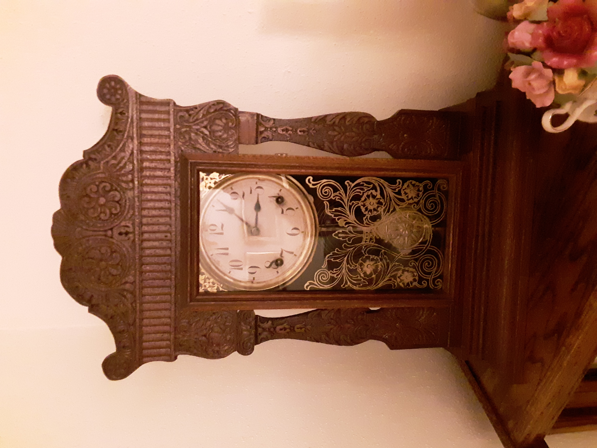

BITB

You can trust me with your baking needs!
I
have always felt at home in a bakery, any bakery. I always knew today was
going to be ok when I drove into the bakery parking lot. I knew I am
where I belong. Beyond a doubt it is dark and early. My sleep pattern
is atrocious (I’ve slept on bags of flour, more than once),
anything but ordinary. My memories of bakeries just keep going
further back into my youth and younger and younger days. I can tell
you of days going to the “Federal Bakeshop” in St. Joseph, Mo.
Going down the monster hill on South 22nd Street (1 block over from Grandma's house on 23rd) and then in the snow! Whoo.
The incredible smell of fresh pastries, breads, cookies, pies, and
the beautiful cakes. “I want” is the only way to express the
desire to get everything. Danish has been my personal favorite of all
time. Give me a hot Danish (any flavor) right out of the oven, and I
will give you anything. The summer after I finished kindergarten, we
moved across the big Missouri River to Atchison, Ks. Dad had bought
his first bakery. Now the bakery became my second home. On weekends,
I’d jump at the chance to get up at 12:30am to go to work with dad.
I wasn’t much help those days, I did a lot of watching. Amazed with
the huge bags of flour that I couldn’t even budge. By 5am, I’d be
asleep upon one of these 100-pound bags. Later, in the morning I’d
be nudged, and dad would tell me “it’s time to get busy, I was
big enough to help clean, to grab a broom and start sweeping. I must
be the worst sweeper of all time; it seems I’ve never graduated
from sweeping. My duties grew with the ability to stay awake in the
early mornings. I would stand on a milk crate and learn how to handle
the donuts sticks and flip the donuts in the fryer. Even before I was
strong enough or had the reach to dip the screens of proofed donuts
into the grease or take them out (or lift the glazer hopper [handle] to glaze
them}. But lord I got to eat warm donuts - way too many, freshly made before they
ever got cold. There is something to the saying “get’em while
they are hot”, It's alot better than "gettem' while they are cold".
One week it was my turn to deliver the treats for my
cub scout meeting. I took chocolate eclairs that I had helped to
finish (fill with Parisian cream and ice the tops). I was a great
scout! When I graduated High School, I joined the Navy like my father
had done. I have always wanted to be like dad. After the Navy, my dad
had a donut shop where I was his partner. I can remember all
too well mixing the dough by hand with a canoe paddle. We cover a
bakery rack with a tarp and put an electric skillet on the bottom to
make steam for a simulated proof box (an enclosed area where the
humidity is controlled). Then after a while, we closed the donut shop
and both of us went to work for a central bakery in Channelview that
distributed baked goods to a half dozen grocery stores. Here at this
large bakery there were 2 huge revolving ovens that could hold 75
full sheet pans at a time. I also experienced a pizza oven at this
time, where it was necessary to turn the pans from inside end to
outside end to get an even bake. This took away labor from doing
other things since it needed rotated every few minutes or the end in
back of oven would burn rapidly. A walk-through proof box where you
put a rack in one and then another rack and then another rack till
the first rack came out the other end ready for the oven. Here is
where I began mixing on the big Hobart mixers. Breads were divided up
(scaled) by hand kneaded and balled up by hand and then pounded flat
and rolled into loaves by hand. A German baker taught me how to braid
Challah bread. I learned how to run my first dough sheeter to turn
large loaves of dough into long thin sheets to cut doughnuts. Pick
the donuts up 6 at a time with both hands and lay the dozen doughnuts
in lines on the frying screens (whereas in our donut shop we had a
single biscuit cutter to cut the donuts one at a time). Also, there
was a duchess dough divider that you put a 3- or 5-pound piece of
dough into and out came 36 pieces the same size. A cookie
machine called the cookie king cranked out cookies as fast as you
could crank the handle. We would get 35-pound cans of frozen fruit
and add sugar and starch and cinnamon to make pie filling. A pie
press was available for making pie crusts in the aluminum pie pans.
Here we used ingredients from “JW Allen” which probably is on the
higher end of price to make the best products you can find. Opposed
to Rustco products which would be on the cheaper end. The Rustco
items seem to always be doctored up to get a into presentable
product. In between, I’ve used Best Brands, American Products,
Pillsbury, Dawn, Durkee, and Riches, all being superior to Rustco and
falling shy of the JW Allen supplies. I managed to get married along
about this time and never worked with my father again. One of the
first jobs I had as a family man was for Jamail’s of Kingwood. I
began as a donut fryer and was a baker in a heartbeat and bakery
manager as soon as you could turn around. I began making items you
could not find anywhere else. Like chocolate mint cake and pineapple
coconut orange Bundt rings. For the first time, the Kingwood bakery
outperformed the other Jamail’s locations in contribution to store
profits with better labor control and less shrink. After this I found
myself in Lubbock working for Furr’s Inc. at their Food Emporium
stores. Along with the full line bakery there was a tortilla shop for
fresh tortillas. It was in these food emporium bakeries I worked hand
in hand with several Mexican bakers who showed me some Mexican
baking. We mixed cookies by hand on tabletop without any bowls or
utensils, just our hands. We made Pan de Huevo, Semites de anis,
bolillos, empanadas, and wedding cookies. I was introduced to the
double wing sheeter and an automatic bread machine. For the first
time, I made cheesecake from scratch as well as hand rolled
croissants, we sold each afternoon for a quarter a piece hot out of
the oven. We also provided breads and sweets for “The Bistro’”
restaurant and a satellite location of The Bistro. This was a 5000
square foot bakery with its own receiving dock and massive walk in
coolers and freezers. This was also the first bakery where we
recycled from day old sweets into Banana Nut Bread, and Blonde
Brownies. I went on to Albertsons and once again worked through donut
fryer (here there was a duel set of fryers that took considerable
timing to run both at the same time) where we kicked out hundreds of
dozen donuts every day. We used an electric cookie king machine which
took two people to operate (one would feed pans into machine while
the second would catch them coming out. It was here in Amarillo that
upon arrival to work we would check which direction the wind was
blowing. If wind came from west at good speed it would help the oven
to bake faster, and if the wing came hard enough from the east it
would slow down the rate of speed the oven functioned at. With
Albertsons I transfer numerous times till I ended up in Conroe as
Albertsons broke the Houston market. In Houston I travelled around
(on top of managing my bakery) to over 20 new store openings and help
train the new store bakery staff. Grand openings were Working for
Albertsons, I received the “Triple Crown Award” for making my
goals more than once and bonused 3 out of 4 quarters each year for
outdoing projections. Once a month, we had “French Bread Saturday”,
when our goal was to sell 1000 loaves of French bread on 1 day. It
was challenging enough to get 1000 loaves baked in one day on top of
carrying on with normal production. And then to get the bread sold
the same day. One month, we had the French bread contest each
year to see who could sell the most in the month. My best effort
churned out 11,000 loaves, a record still standing today. It was
standard business at Albertsons to have boy scouts come into store
and demo chocolate chip cookies and sell bags of cookies where at the
end of the day they would take a quarter home for each bag sold. I
was the only one ever to utilize the local High School’s French
club to come into the store for the month to demo the French bread
and talk French to the customers to achieve success. Then the French
club got money to put towards their summer trip to France.
So, I’ve been a newspaper boy, a dishwasher (at my father’s bakery), a busboy at a pizza parlor, a bagboy at a grocery story (more than once), a fast-food cook, a stocker, a electrician’s helper, and an appliance salesman before, in-between, and after my baking jobs.
While working my sixth baking job, I remember was in Grand Prairie (and living in Arlington), I planned my first break at work each day to coincide with daybreak, most of my years in the bakeries I have worked. The sunrise seems to keep me grounded. My friend and co-worker, John was sitting beside me one morning, and unexpectedly he blurts out; “I would have made a great Seal team member”. John knows I’ve had every chance and reason to abandon this crappy job, yet I continue to excel in this hopeless hole. It’s a shame, all I’ve ever had was a crappy hole to hide in. I do believe John is right, right down the line. I take care of John, better than anyone takes care of me. I don’t mind. In fact, I rarely even think of these things. By now, the new day’s light has arrived, bringing wonderful color to everything, God’s finest work. May God’s light shine through us. The drudgery, ugh, back to menial tasks, performed every single day. Just to do my part, breaking my back to make others appear to be the best. If I have your back, then there is not any doubt, nothing will creep up on you. John Howard III, Navy Frogman, among the very first Seal Team trainers, thinks highly of me, as I do of him. It takes more than a single reason for anyone to act. Always, there are ulterior motives which may never be known. But, when there are enough reasons to act, then act one will. So, I plan my sunrise breaks, to see the most beautiful women start their days. Trading smiles is the warmest feeling I know outside of family. To give every person I see a smile is part of my ritual morning prayer. I also give thanks for all I’ve have, all I have coming to me, and all I have had the honor to have had in the past. I ask God to let me walk with him, to give my body to him for his purpose. And most important to me, I beg of God to send my Guardian Angel to another person who’s in greater need than I am. This always helps me to remember there are others in worse shape than yours truly. Ah, just another day in the life of a baker. A baker’s son, I never wanted to be, anything the more like dad I’ve become. I wouldn’t have it any other way.
I’ve lived here in Crockett, Tx just over a year now. Out on parole now, with 17 months to go before my sentence has been completed. Not driving (a condition of my parole) before July of next year, I’ve been on foot (and bicycle) looking for a job close enough for me to be able to make it to. I’ve applied and reapplied so many times. I’ve had several nibbles, but no luck. Except one fast food restaurant where I could not manage to stand in the same place long enough, without my damaged nerves in my left leg going haywire. Then an unbearable pain would accompany this leg where I would have to sit down. I ended up resigning this position with a mutual understanding. As soon as I get my truck back on the road my opportunities will blossom. I have come upon dark days of this life, testing my faith daily. I am somehow bent on making a superior “Moore’s law” than ever before. I pray there are no more attempts after this one becomes bearable again. I did not choose a profession; it seems all my jobs I’ve fallen into one way or another. By accident it seems. While selling home appliances might be a piece of cake, I am much more at home in a bakery. I am a lifelong student, always learning. Perhaps in a classroom, perhaps on the streets, or upon the wide-open seas. I’ve have learned everywhere I’ve been. From the Mississippi River to the east and all the way to Africa to the west. I can be as good as anyone at anything it seems. At the same time, I was raised to know in my heart that I am no better than anyone. Walking this line has put a damper on things to say the least. I am a good hand. I am willing, able, and loyal, till greed enters the scene. I hate narcissism, and I prefer not to be the center of attention. I simply have not found a challenging goal to fulfill me. Well, other than my wife (together the two of us were one)! Now, I’m an obese, old ex-felon, with no future. I could not handle my spouse’s death and lost everything. I’ve gone from collecting guns to having guitars surrounding me. Funny thing is I never shot the guns and I don’t play guitar. I have only dreamed of having a keen eye, yet one day still, I may surprise myself and learn to play guitar. Still, I love both. Some days I can barely get out of bed. Barely breath. So, what happens when you’re no longer useful, when there’s nothing left to give, when you’re no more than a big waste? Thank God for family. Without my sister I’d be in the streets, homeless (same for mom). This I know and yet, I cannot get a plan together to survive on my own without a job, or transportation of my own. At least, not in Crockett, Texas, here I am lost. Lost in Crockett. Not here, not now, my time has passed. Still, I’ve gone back to school, to finish a bachelor’s degree in CIS, networking. How does this make any since? I’ll be 60 years old, without experience, without any “in’s”, and wondering if I’ll be wandering still, after this. I received eyeglasses in the first grade and have been blind even before then. I did not see the crime I committed, I blacked out, and in twenty seconds ruined my life. Time will tell all of this. I have been blessed to have 4 sisters, and 4 daughters. It’s a good thing I like girls, really like girls or I could have bolted at the age of, say six. I love my girls and hope they all know how much I miss them. The grandkids (amazing that 4 are boys) are missed tenfold.
My legs, and weight (diabetes) are my biggest obstacles in living a meaningful life right now. Nerve damage in left leg keeps me from standing in a spot for any length of time, and sitting extended periods cause leg cramps (as well as legs going to sleep). I watch my sugar intake (sometimes not so good, I have been a baker most of my life) and try not to overeat but lack the will power to move more. I need to exercise and workout. I just plain need to do this regularly, not occasionally. A bit of counseling may be what I need. As soon as I’m asked if I want to kill myself, I’m done with them. I onlyother than to be like my father. God rests his soul. The older I get, think of this choice while sitting in front of a counselor who brings the thought up. Not ever, even once on my own do any thoughts of hurting anybody exists (this is a troublesome situation as to having a wreck with someone I never saw getting seriously hurt).
I lost everything that day I had my wreck, in 15 seconds my life changed forever. Rock bottom I hit is what they say (couldn’t go any lower). I’ve seen a lot of fools in the penitentiary. I didn’t like any of them. Some couldn’t help it, they were seriously crazy (it was 5151 tattooed on them someplace, certifiable and they were proud of it, very proud indeed). It was like looking in the mirror every time I turned around. I have not ever been able to understand how someone would intentionally hurt another and killing is another thing, yet every day I saw them, and they saw me (neither being a threat to either). I understand how a man might walk in on his wife and another man. Then in the heat of the moment kill him or her, or both. He’ll have to pay for doing these things. It still doesn’t fix anything. What little money I come by; I cannot hold on to. I’ve never been a saver or a spendthrift. Now, Amazon is my favorite shop. When the Amazon boxes arrive, I feel the need to smuggle them in. There’s guilt for you. I am a pig (seems to be getting bigger all the time). I am selfish, without a care for the future. God provides, every time, on time. Somehow, someway, I have been taken care of. I took care of my 4 daughters until they were grown. Taught them to be competent and be able to take care of themselves. All have secure relationships with prosperous guys. I am so proud of them. Prouder than anything else in my life today. I want to be a scholar and am doing my part to achieve this. I want to be a musician like I have my whole life and presently I am making strides towards this. I want to be employed, but have a challenging time seeing anyone giving this old fat, ugly, hippie a chance. I’ll have a degree without any experience or any way in. Not a chance for nepotism happening for me.
I had grown accustomed to picking up a bag of reefer every payday. A half ounce, or a quarter oz. if it was strong. I smoked out of the same pipe the last 15 years. Two tokes at a time, 4 times a day (with the good stuff) kept me mellow where I still functioned sufficiently. I thought same as always, there was nothing I shied away from because of smoking. I began smoking daily, when I reported for duty on the USS Okinawa in 1980. Forty years later I clearly recall walking across the quarters deck, handing off my papers and seeing over the quartermaster’s shoulder at a bronze plaque prominently presented at eye level. This was a memorial plaque which had engraved the following inscription: “In memory of Bradley Johnson”. Me, I mean that is my name! The quartermaster caught me staring at the plaque as I asked him instinctively “What’s That”? He told me it was regarding a sailor that had gone missing at sea the last time out. The quartermaster looked at the paperwork, then the plaque, back to the papers, and spurted out where I should go first as he backs away from the podium and myself. I spent a year and a half in the Navy, experimenting with mood altering substances. As soon as I was released from the Navy, I mainly stuck to grass as my choice of poison.
Not long after I was released from the Navy, I met my wife. We were both working at the first job I found when I landed in Cleveland, Tx. At the local “Jack In the Box.” Thirty-two years I loved this woman, with heart and soul. I very well heard any of the demons she had leave her the night she died so she could enter Heaven for eternity. The only place she belongs.

So,
once again I am starting over (no news here, nothing surprising about
it except this is first time to hit “rock bottom”)! No job,
nowhere to stay, no friends, no place to go. I guess you might say I
am free. Free to do anything I choose (Lord, help me make good
decisions).
I recall playing golf 3 and 4 times a week 10 years ago, and my weight was down to 240 lbs. My waist size had just fitted into size 38 shorts and pants. Then I lost a job and after that Mel went to heaven and I began a lonely, slow climb in weight all the way to 348 lbs. early this year. Sadly, I had become an eating machine with no change coming. So, I thought. Here again, I am in God’s careful watch, and somehow ended up in another, different environment where I started walking and eating considerably less. Here, in the first two months I dropped 50 lbs. Yes, back under 300 lbs. For 6 years I had requited to be over 300 without any regrets. Now I know things change. Sometimes it’s a gradual change, while other times it can be an instant change. I can promise change. Things will not remain the same. Things might appear to be the same, they might feel the same, but nothing stays as it is now.
I have done it, twenty-five years later, I have sat for A-plus exam and I passed! What a monkey off my back! Now do it one more time in a couple months and I’ll be A-plus certified, a lifetime’s dream come true!
I’m on my way to James’ and Meagan’s to help work on my truck. To get it ready to pass inspection so I can get it registered. Then I’ll be on the road again (after I get insurance). I’ll be able to work again! Oh, great, out there making a living. Supporting myself once more. I just can’t wait. Next up will be my own place. I long to walk in after work and start practicing the guitar a while, then hit the books for school (that degree is on its way).
My niece Megan and her husband James Bulgar are two fine people (and parents). They have helped Mom too many times to count and have given me the help I could not have found anywhere else. I am forever grateful. Since these kind folks have been so generous, I have agreed to house (dog) sit for them while they go play in Florida for a week. I am planning on studying school, practicing guitar and playing with the dogs for a week. The first day I’m there goes so well, I set up my computers for school, line out my guitar gear for some serious practicing and I am lazy the rest of the day. The second day (Sunday) I get up for a walk, and head out. I intend to find out how far the tennis courts down the road are exactly (I figure about a mile). I’ve gone about half mile and rounded the corner to be on the busy thoroughfare and I see a spot ahead of me that is wet, with a decent size puddle to left side of sidewalk. I look right to go around wet sidewalk, but traffic is coming so I proceed towards right side of wet sidewalk. I now see the stream of water from sprinkler coming towards me from the other side of privacy fence on inside of sidewalk away from street. Still cars coming so I sort of hold my hand up so I don’t take direct hit to mu eyes and move on. I’m all but on dry sidewalk when I catch a rise in the sidewalk with my toe and sends me sailing. I see a small tree coming fast to my left I think I may grab to catch myself from going all the way down. I have my hands outreached for this tree as I fly by, missing it and with outstretched hands I land on my right chest and continue to come to a stop after skidding a couple more feet. I’ve certainly been dazed, laying there looking up at sky for what seems like a long time, and now it’s time I must get up gather myself and move on. I realize when I have made it back to my feet that I haven’t been laying there too long at all ( the same song is playing through my headphones) I dust myself off and look for blood, which I find none and head on down the sidewalk to the tennis courts (another quarter mile). While at the courts I sense a scrap on my left leg just below my knee, but it’s not bleeding. On my right calf a place that’s been irritated but no broken skin and I think I’m 1 lucky guy. I return to the house I’m watching in about the time I thought I would take on the walk, although the last hundred yards get increasing difficult to be comfortable. I shower with no problems and apply some wound cream on my scrap. I think I’m all fixed up. Time to get some studying done. Time to play guitar. Back and forth all day long, study, guitar, study, more guitar. I am satisfied with the day. The next day I’m sore to rise and think “the second day is always the roughest” after an accident and start looking forward painfully to the day following. I manage to study some, but my desire to play guitar as diminished. I clean house so it’s nice to be in and stop for the day and binge watch on “Dead to Me”. Now comes the day to remember. I have all sorts of trouble getting up out of bed, I have terrible disposition and wonder why I’m even here in somebody else’s house. I don’t want to study; I don’t want to play guitar. I am still enjoying the dogs, and to help the time go by I do a couple loads of laundry for my niece. I am unable to complete folding the second load (the stretching is annoying me to no end) and call it quits. I refuse to cook and head out to find a restaurant I want to eat at. I head for the Chinese buffet which is closed. I shoot to the next Chinese restaurant I know of and it is also closed. I’m out of hunches so I’m going to drive till I’m there (wherever there is). There happens to be a Poncho’s Mexican Buffet I end up at to gorge myself even though I feel guilty before hand. I stop by Walmart for some dogfood on the way home and cannot stop myself from adding on some “shopping therapy” for myself. I know I shouldn’t have each time I placed my hands on an item, but that feeling wasn’t strong enough to think I could escape my pain. Anyway, I end up back at the house, unload and I am delighted the Houston Rockets Playoff game (6 pm) is about to start. I throw a pillow on the floor thinking the dogs would lie beside me while the game is on. One lays down on my left graciously, and then the second drops to my right like a dead weight, bouncing into my right-side chest. And instantly there’s shooting pains on my right side from waist to neck. I’m petrified I can’t move. I figure (hoping) that by the end of the game it will have passed. Every time I catch my breath and relax the waves of shooting pains come once again. I am obvious to my surroundings. The game ends and I haven’t improved any and the game is starting over for a replay. Crazy me thinks once more that by the time game is over, I will have recovered. Now, I begin with all those thoughts of desperation one minute and the next minute I’m within myself again calm. Back and forth, will I have a heart attack? I can just remain here till morning and be able to move then (maybe), Then my sinuses are draining and I am going to drown without any water covering me, Now, I’ve got the idea to just reach my phone on the table six feet from me and call for help. That is the answer, one inch at a time, I begin the scoot around (all I need to do is change 180 degrees) and It’s over. One inch and 5, 10, 15 minutes to recover my breath. OMG, I had no idea what time it is, but I call mom to let her have heads up I will be at hospital the next day, I don’t know which. She asked me to request hospital closest for her. I call 911. I transpose the numbers in the address from duress. I see the lights of the ambulance stop and then proceed on down the street. I call 911 once again.
A childhood accusation has haunted my life. It seems I can remember this incident as clearly as any in my life. I was in the 4th grade at the time, and walking home from school one afternoon, as I passed by this house where we would play once in awhile with the little boy and his baby sister (I would be instructed to go with my little sisters to go play there with the small girl and escort them home after a bit). Well the father of these two kids saw me and started screaming “there he is” and chased me the rest of the way home. As my mother happened to be home this afternoon (where she normally would have been at our bakery working), she first handedly listened to this irate father accuse me of molesting his baby girl. I had not any clue as to how or what had happened. He let my mom know he’d return with the police and deal with me then and left. I pleaded with my mom I was innocent of whatever he was talking about, which I did not understand in any way of his misbeliefs. It wasn’t two hours later; this man came back to our home and was crying and begging to be forgiving as his son had confessed to being the perp. Until this family moved, I did not used the street in front of their house (or the alley next to it either), as I was forbidden. It was days later; I finally was told that this guy’s own son had taken a stick and pushed it up inside his sister and then broken the stick off. I never heard how this came to happen, but that guy didn’t want the authorities notified over what his son had done. Funny how things fall out when it’s your family opposed to another’s family.
Navy days
TDCJ
Pat Pinkert
DWI Kent
Los/Bobby Joe
Green/Head
Dra Carter
McGee
Coach Jones
Kent
Chow Hall Africans
My Mustang/Nova/LeBaron/Reliant/Century/Calvalier/Ram/Sierra/Sierra/Sierra/Forte/LeCerne/Bicycles/Ships (boats)/Planes
Sisters/daughters/Mom & Dad/Grandparents/Aunts, Uncles, Cousins)
Bakeries 1,2,3,4,5,6,7,8, 9….
Price Cutters/Goodwill/Sears/Walmart/Albertsons/Jamail’s/Food Emporium/Grays Electricians/Pizza Parlor/Paper route/HEB/Whataburger/7-Eleven/Woolco/Jack-in-the-Box/Holiday Foods/Brookshire Brothers/Flooring Warehouse/Kroger/Ronnie’s/
Waynesville/Crockett/Kingwood/Conroe/Cleveland/Liberty/Sheperd/Lubbock/Amarillo/Arlington/Plano/Waco/ College Station/San Diego/Ok City/Atchison/St. Joe/KC/Iowa